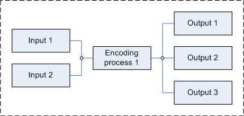
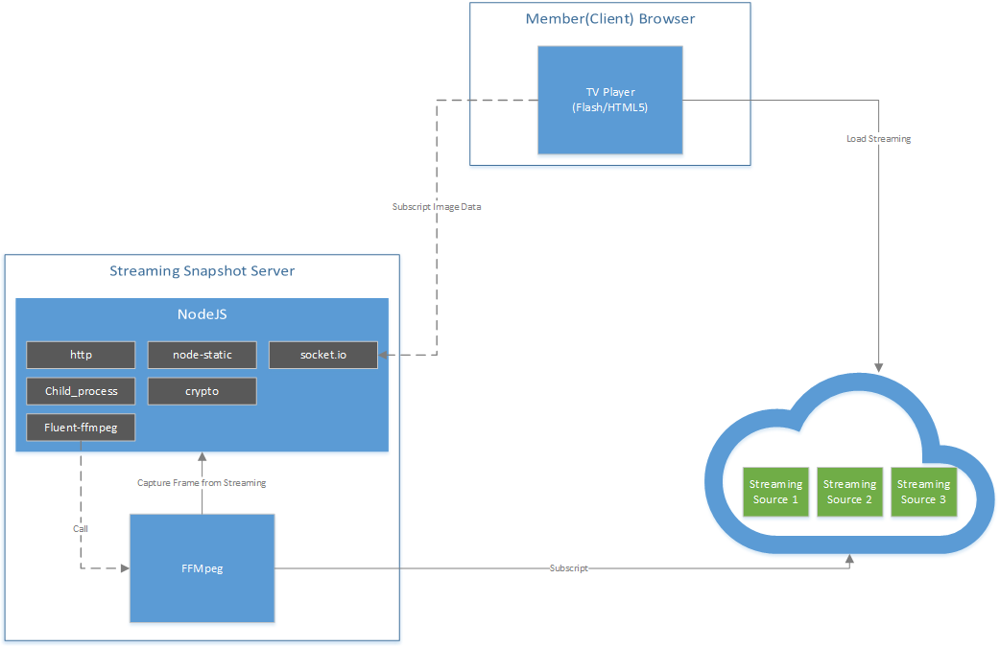
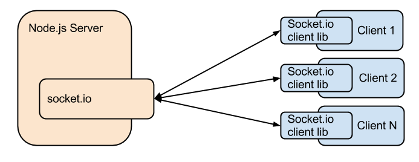

透過NodeJS與FFmpeg來擷取串流中的指定frame的圖片
工作上有遇到一個需求需要將串流做pre-loading(播放器尚未播放時的圖片）．剛好遇到公司強者同事 - Ticore 分享的NodeJS+FFmpeg自製的串流截圖技巧．而這樣的架構不只可以弄出一張圖片，當我們把圖片做連續截圖並指定播放到前端後(pub/sub)即可產生出另一種streming 轉檔輸出的效果, 讓原本HTML5不支援的串流格式(如RTMP)改為用圖片播放．

Architecture
整體架構我們會使用到下面的套件並透過pub/sub的方式來讓client端的browser主動subscript圖片的變化呈現到瀏覽器上．

下面會針對必要套件做說明，而沒有說明到的套件則表示為該架構額外的引入套件，僅為開發/除錯使用
FFmpeg
這是我們作為串流擷取圖片的主要工具．FFmpeg是一個免費開源、功能強大的影音處理框架，可以執行音訊和視訊多種格式的的錄影、轉檔、串流功能，包含了libavcodec ─這是一個用於多個專案中音訊和視訊的解碼器函式庫，以及 libavformat ——一個音訊與視訊格式轉換函式庫．它可以使用在Linux, Mac OS X, Microsoft Windows, BSDs, Solaris等多種不同的作業系統和多種硬體架構上．
安裝好套件後，在終端機下輸入「ffmpeg」，就可以使用ffmpeg幫我們轉檔了
NodeJS
這邊我們會透過NodeJS來幫我們處理兩件事情：
- 呼叫FFmpeg處理Streaming截圖的服務器，並將擷取的圖片存至記憶體內．並透過socket.io傳給client的browser做連續呈現
- Host靜態頁面(index.html)並準備接收伺服器端socket.io推送過來的更新圖片
fluent-ffmpeg
fluent-ffmpeg是一個NodeJs的套件可以幫我們簡化FFmpeg複雜的指令，變成可閱讀的程式碼．透過鏈結的方式將我們想執行的邏輯串連起來，方便我們閱讀與維護．
socket.io
socket.io是一個提供即時訊息溝通的套件，透過event-based的方式來達到主動的推播．

SourceCode
原始碼公開至streaming-snapshot